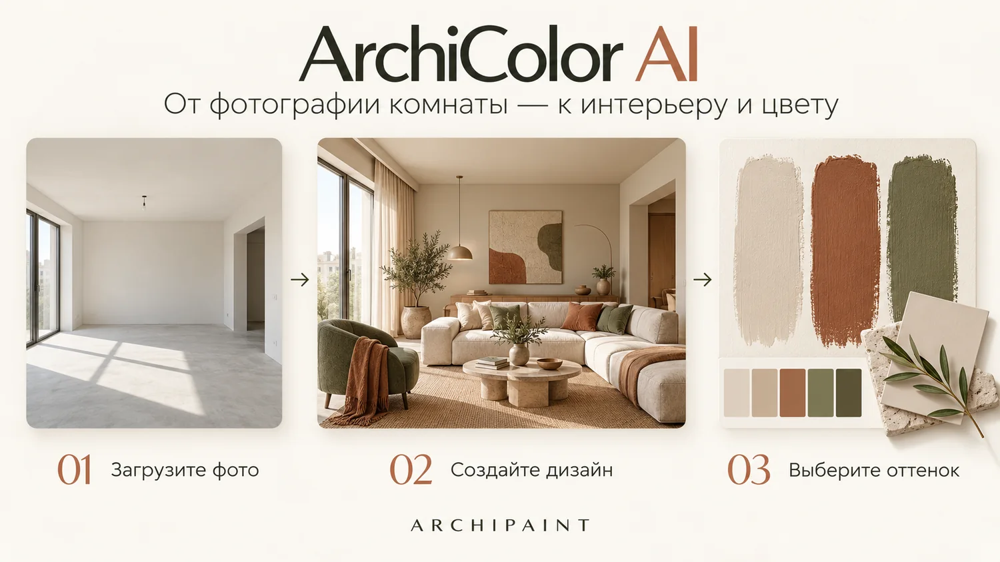

Увидьте свой интерьер до начала ремонта
Загрузите фотографию комнаты, выберите направление — ArchiColor AI создаст новый интерьер. После генерации мы поможем найти ближайшие реальные цвета ARCHIPAINT и перейти к заказу.

Начните с фотографии комнаты
Сначала изображение, затем стиль. Мы оставили на экране только те настройки, которые действительно влияют на результат.
1Фото и параметры
Перетащите фото комнаты сюда или нажмите
JPG · PNG · WEBP — или вставьте из буфера (Ctrl+V)Доступ к ArchiColor AI
Для использования ИИ-помощника необходимо выполнить действие.
Анализируем фотографию интерьера…
До и после
Слева — исходная комната, справа — вариант ArchiColor AI. Нажмите на фотографию, чтобы открыть её во весь экран и листать результат стрелками.
Мы автоматически выделим основные оттенки нового интерьера и найдём ближайшие цвета каталога по CIEDE2000.
Цвет экрана и краска на стене — не одно и то же. Поэтому совпадение с каталогом оценивается в Lab через CIEDE2000, а не только по HEX.
От изображения — к реальной краске
После генерации сервис анализирует оттенки изображения и ищет ближайшие активные цвета ARCHIPAINT по CIEDE2000. Выбранный цвет сохраняет реальный ID каталога — поэтому дальше можно получить доступные товары, фасовки и актуальную цену.
2Цвета нового интерьера
Основные оттенки визуализации и ближайшие реальные цвета ARCHIPAINT. Выберите понравившийся вариант, чтобы продолжить.
3Гармоничные сочетания
Сначала сгенерируйте дизайн
Для каждого из 3 вариантов оттенка мы построим схему по классическим правилам цветовой гармонии — аналоговую, комплиментарную, триадную и другие.Кликните по цвету схемы, чтобы открыть карточку и заказать пробник 50 мл, образец на бумаге или 1 л краски.
Как построены гармонии
Не «на вкус», а система на цветовом круге
Каждая схема — это фиксированный угол между цветами на цветовом круге, а не интуитивный подбор. Такую логику легко объяснить заказчику: она опирается на классическую теорию цвета, а не на личный вкус дизайнера.
Комплиментарная
Цвет и его противоположность на круге (180°). Максимальный контраст.
Аналоговая
Соседние цвета, шаг 30°. Спокойное, природное сочетание.
Триадная
Три цвета через 120°. Ровный баланс в насыщенной гамме.
Раздельно-комплиментарная
База и два соседа её комплимента. Контраст мягче, чем у двоичной схемы.
Квадрат
Четыре цвета через 90°. Богатая палитра для смелых решений.
Поиск по координатам цвета
Введите значение в любом виде — HEX, RGB или Lab. Формат определится автоматически.
Примеры: #C15B33 · rgb(193, 91, 51) · 193, 91, 51 · Lab 46, 32, 28
Выберите формат
Колеровка за 24 часа · доставка по РФ · возврат 14 дней